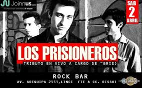

El grupo los prisioneros
El alcance de sus canciones, la marca indeleble de su arenga social y la simplicidad pegajosa de sus melodías hicieron de Los Prisioneros una banda de características únicas en la historia del rock chileno. Nunca antes un conjunto local había combinado con tanta eficacia los códigos del pop y el rock de origen británico, con un mensaje político firme y urgente, enunciado al margen de las ideologías partidistas. Un éxito todavía más sorprendente si se toma en cuenta que el trío floreció en plena dictadura militar, período en el que la difusión de la música juvenil estuvo coartada por una censura sistemática e incontables dificultades.
